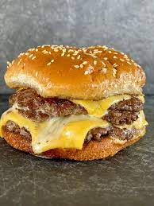

Smash Burgers

A smash burger is probably one of the most common griddle recipes that people make when they first get a new Blackstone or other flat top grill…
and they’re probably hooked on these perfectly crusty yet still juicy and greasy burgers soon thereafter.
A smash burger is exactly what it sounds like, a ground beef burger that is smashed thin on a hot griddle to cook.
The “smashing” typically involves a ball of 80/20 ground beef that is pressed down into an evenly thin patty using a burger press or a spatula.
Ingredients
- The best and most common griddle smashburgers are made with 80/20 ground chuck
- Cheese of your choice, I usually use American cheese
- Seasoning of your choice, I use just a Salt, Pepper and Saltgrass Seasoning
- Regular hamburger bun, with some butter and toasted on the griddle
- toppings of your choice, I eat mine with just cheese and meat
Step by Step instructions
- Prehat your blackstone griddle on low, ready to cook at 425 degrees
- Make balls of ground beef, using a 1/3 measuring cup. Pack meat in cup but leave slighlty loose
- Place the meat in your hand and roll into a ball
- Make two balls for each burger, this will be a 1/3 burger
- Place the burger balls on the griddle spaced out enough so that you have plenty of room to smash and flip the burgers.
- Once you set the burger balls on the griddle, place a piece of parchment paper on top of the first ball, and use your press to smash it down into the griddle (so the parchment paper is between the burger ball and the press to help prevent sticking).
- But remember to work quickly so that your burgers don’t overcook and dry out, which can happen in a hurry. Don’t be so focused on getting the smashing technique right that it takes you 45 seconds to smash each patty. The entire smashing and holding process shouldn’t last longer than about 15-20 seconds for each burger.
- Immediately after you’ve smashed the patties, add your burger seasoning of choice to the top side. Since smash burgers are so thin, I prefer to only season one side of each patty.
- You’ll need to use your spatula to really work under the burger crust to release it from the griddle. And it will probably take a few slightly aggressive sliding motions with your spatula to get your burger “unstuck”. I find it easiest to hold my spatula at a slight angle to the griddle surface and use the long side to dig under the crust.
- Before your burgers are ready to flip, you can place the burger buns cut side down in some of the residual grease on the griddle surface and toast the buns. Greasy, toasted buns… HIGHLY recommended!
- Once you’ve flipped your Blackstone smash burgers, immediately add one slice of American cheese to each patty. If you wait too long to add the cheese, then your burger will overcook before the cheese has a chance to melt.
- Just use your spatula to stack the first patty on top of the bottom toasted bun. Then, slide the second patty on top like this to make your smashburger